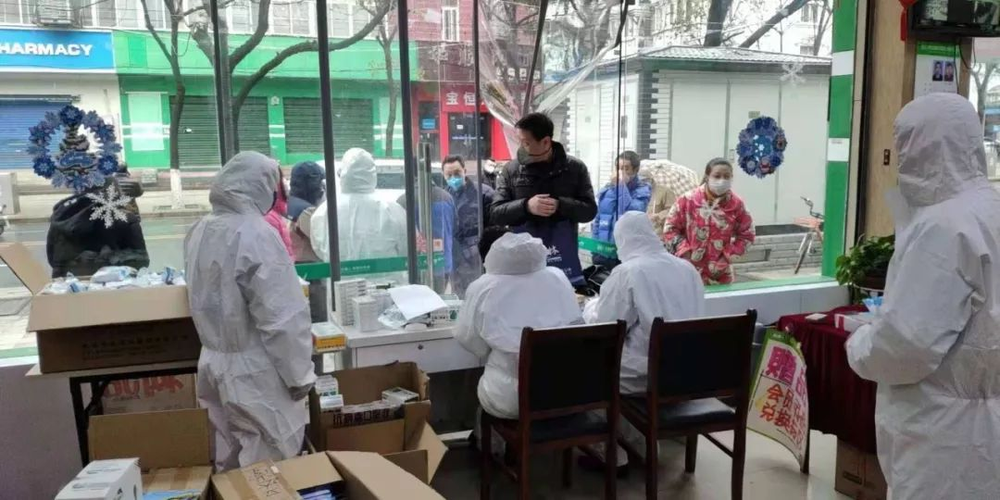
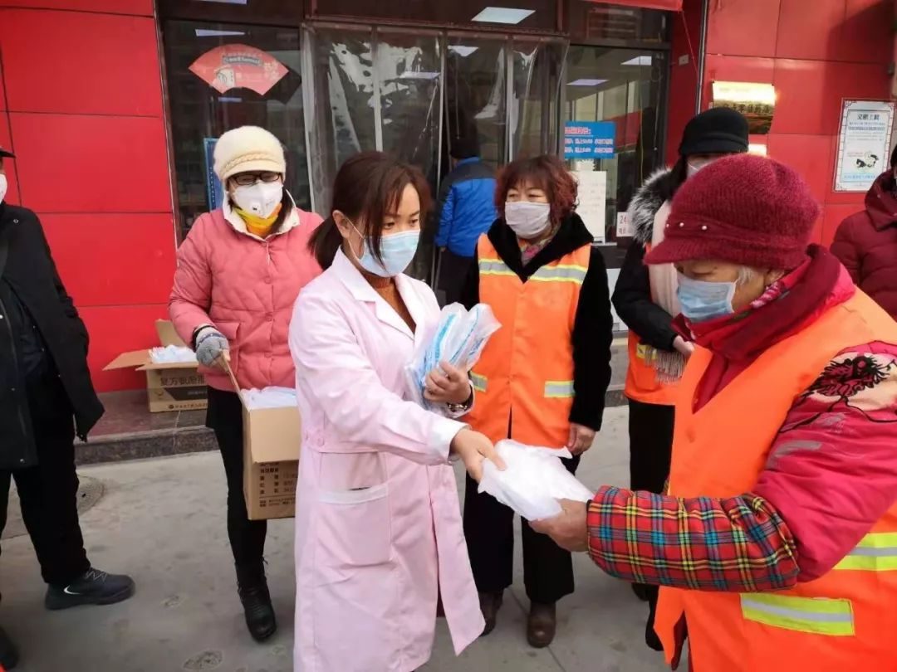
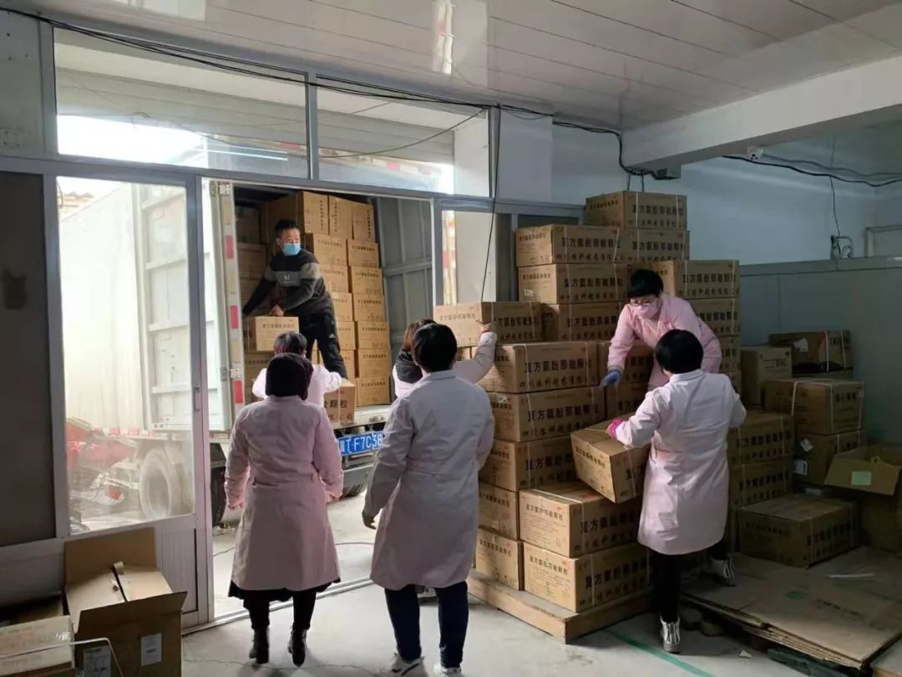

谁来守护武汉人的饭桌
原文链接 备份链接 文/刘雀 编辑/零柒 “都害怕，总得有人往前走一步。” 这是美团买菜武汉融桥站闵捷说的话，他所在站点的马路对面就是疫情定点医院。站点一个员工的咳嗽，就吓退了其他员工，“其实我心里也挺害怕的。我觉得不行，这个工作就摆在这 …

*************▲************* 疫情期间仍旧开门的药店。
全文共2803字，阅读大约需要5分钟。
药店人可能从没想到，坚持日常营业也能成为一件值得赞赏的事，但目前确是如此，沿街看去，店铺门大多紧闭，药店很有可能是少有的还为居民提供服务的商业场所。
目前，全国有40多万家药店，就是40多万个哨点，上百万名药店人就是上百万名“哨兵”，他们日夜值守，履职尽责，害怕、劳累、压力，都不曾使他们退缩，无关乎英雄主义，只不过是作为平凡人，在平凡的岗位上，做着非常值得令人尊重的工作。
这个世上本来就没有从天而降的英雄，只有挺身而出的凡人。
1
“麻烦您出示下身份证，这里有个登记表，麻烦填一下。”
张业文的嗓子已经有些沙哑，然而这段话已经烂熟于心。1月31日，浙江省医保局发布紧急通知，疫情防控期间，零售药店购买发热、咳嗽药品人员都需进行信息登记报告。张业文是杭州一家零售药店的店长，过年期间店员回老家，作为店长需要顶班，除去到公司提货的时间，他基本上天天守在店里，遇上有顾客前来买药，就会出现上面一段对话，如果是购买带一点清热类药物的顾客，张业文和同事还需要给客人测量体温，如果出现体温异常的情况，再了解情况是否从“疫区”过来，“公司交代该报警的就要报警”。
“还好，我们目前没有碰到过这方面的事情”，已经连续工作近半个月的张业文略显侥幸。

“国家不是说有吗？怎么你们都没有的？我要投诉你们！”
疫情影响下，药店承载了太多的情绪。
27岁的谭勇是张业文店里的一名药师，杭州本地人，过年期间主动到店里来值班。2月1日早晨一开门，货架上的双黄连就被一些早早等候在外的人抢空，下午陆续有人来问口罩和双黄连，都只能怅然若失地离去。有顾客情绪比较激动，冲着谭勇嚷嚷，谭勇除了一次又一次解释脱销原因，别无他法，非常无奈。
在杭州刚发现人员确诊的时候，居民就比较恐慌，口罩、消毒液很快被抢购一空，张业文他们工作的店，也有两三天时间的脱销。语气不好、肢体冲突这些店员们都遇到过，有的时候还被顾客骂的哭笑不得，“你们是不是将口罩藏起来了，准备抬高价？”，有经验的药师还好，店里有些营业员是刚毕业没多久的小姑娘，工作繁忙，心理压力也很大，遇到这类顾客，受了不少委屈。
不久前，谭勇在湖北一家药店工作的同学确诊了，他不敢将这个消息告诉父母，只是在工作群里提醒同事们，加强防护。
特殊时期，交通也不便，去医院看病可能意味着危险，药店的存在就尤为重要，总有人为了些特定的药，走遍城区的药房，店长张业文还在坚守，谭勇也想继续留下来。

“尽量不说，尽量不说坏的，尽量说好的。”
张业文到家以后，妻子明显有些焦虑。
“你说要是被感染的人去你们那里买药怎么办呀！”妻子的发问让张业文不知道该怎么回答，他只能笑着讲，不会的，今天没事。“不怕一万，就怕万一…”，张业文无声地走进卫生间，洗手，换衣服，消毒，他实在不想让妻子担心。
每天下班回家，谭勇的父母都会问他店里的情况，有没有遇见咳嗽发烧的人，“基本上店里的人回家都会被问，我们一般就说，不多啊”，谭勇一直避免和父母说太多有关工作的事情，因为他们会去找破绽，终究还是担心。
“尽量说好的，那么多人都在担心，还不如就自己一个人担心“，张业文他们在这个春节上班期间，都很默契地践行这个方法。
2020年这个特殊的春节，在新冠病毒肺炎阴霾的笼罩下，城市的节奏被打乱，有恐慌，有愤怒，有无助，有失望，但仓皇之下，仍有温情不断。全民救援的宏大叙事背后，在我们身边，有这样一群药店人冲在一线，医生在救，他们在防，高度紧张，身心疲惫，都不过是平凡人，在沉默的世界里，张开双臂，没有人愿意冒着生命危险赚钱，只不过是选择默默活成英雄的样子，守护好一方百姓的健康。
2
药店人可能从没想到，坚持日常营业也能成为一件值得赞赏的事，但目前确是如此，沿街看去，店铺门大多紧闭，药店很有可能是少有的还为居民提供服务的商业场所，哪怕是疫情最严重的武汉，开门营业药店仍有4084家，达到了日常供应的85%，市民基本上可以就近买到日常药品。
举国抗疫，药店人有着责无旁贷的使命感，凭借社区网络覆盖的优势，零售药店发挥了疫情早期检测作用，成为除医院之外，抗击疫情的重要阵地。2月初始，多地主管部门密集出台了零售药店退烧药、止咳药实名认证且上报销售情况相关政策，市民在购买相关药物时需在药店进行实名登记并填写信息，药店工作人员还会主动为进店的顾客量体温，对体温异常的顾客，督促、劝导其到医疗机构及时就诊，一旦发现疑似度较高的感染人员立即报告。

这些基础性工作，成为保障疫情不往外扩散的坚实屏障，为抗击疫情建起一道重要的哨卡。正如浙江省药监局局长说：浙江全省两万多家药店就是两万多家哨点，多一道筛查关，就加一层安全网。
浙江省药店人的行动，是全中国所有默默奉献着的药店同行的一个缩影。疫情来势汹汹，迅速蔓延，致使全中国上下都陷入医疗物资紧缺的情况中，抗疫一线的医疗机构频频呼救，物资告急，牵动所有人的心，药店人在这一刻亦不甘落后，及所能及，全行业筹集物资送往疫区，为抗疫贡献坚实的力量。大连锁筹集物资，支援一线，一些小连锁、单体药店，虽然能力有限，也增加了人手，坚持24小时营业和30分钟送药上门，启动“送药上门安心达”服务，成为永不打烊的哨点，全方位保障群众的日常用药。
3
目前，全国有40多万家药店，就是40多万个哨点，上百万名药店人就是上百万名“哨兵”，他们日夜值守，履职尽责，害怕、劳累、压力，都不曾使他们退缩，无关乎英雄主义，只不过是作为平凡人，在平凡的岗位上，做着非常值得令人尊重的工作。

针对药店人在抗疫行动中做出的奉献和牺牲，康恩贝金笛发起一场呼吁医药行业和全社会关注、尊重药店人的公益行动——“康恩贝金笛·抗疫哨兵——药店人专项保障行动”，通过为新冠肺炎疫情防控期间值守一线的药店店员代表提供保险保障，希望能呼吁到更多的医药及流通企业一起加入到关爱药店人的行列，给予百万哨兵后方支持，为战友加油、助力。
“疫情防控是一场人民战争。医院是火线，我们医药企业是兵工厂，药店是哨卡，而百万店员就是哨兵，我们都是同一条战线上的战友，守护健康、打赢疫情防控战是我们共同的使命与责任。”中国非处方药物协会会长、康恩贝集团董事长胡季强说，“希望全行业一起行动起来，药店人守护前线，我们守护你们”。

4
2019年夏天，谭勇看了一部古装国产剧，他非常喜欢其中一个情节，把后退当作战术的落魄子弟，在同僚生死未卜，城中百姓性命攸关的时刻，在望楼上用激昂的鼓声吼出“不退”。他自始至终不是什么英雄，只不过在那一刻，用他的良知做出了选择。
这个世上本来就没有从天而降的英雄，只有挺身而出的凡人。
与疫情的战斗仍在继续，尽管工作繁重又有感染危险，但更多的药店人都选择正常营业，24小时坚守，凭着今时今日的担当与责任，选择值守岗位，从不退缩。
*************▲************* 观看视频，致敬中国药店的百万“哨兵”
（应受访者要求，张业文、谭勇均为化名）
（专题）
原文链接 备份链接 文/刘雀 编辑/零柒 “都害怕，总得有人往前走一步。” 这是美团买菜武汉融桥站闵捷说的话，他所在站点的马路对面就是疫情定点医院。站点一个员工的咳嗽，就吓退了其他员工，“其实我心里也挺害怕的。我觉得不行，这个工作就摆在这 …
原文链接 备份链接 几乎没有看到过上海这么萧瑟的景象，冬天法国梧桐的枝桠本就光秃秃的，将街道原本的模样摊在人们面前。路边的店铺大多都紧锁着门，偶尔能瞥见三三两两的行人，大家也会刻意保持着间距，疾步向前。 这个城市似乎正在隐秘地在进行着一 …
原文链接 备份链接 邵阳日记 _ 小新 _ _ _ _ _ _ 我的家在湖南省邵阳市邵阳县塘田市镇，1月10日，我从广州的学校回到老家。本来准备好过一个安逸的寒假，结果突如其来的疫情让周围的一切都不再平静。 _ _ _ _ ●口罩● _ …
原文链接 备份链接 这是系列报道的第五篇，发自新疆小城的「个人志」。17 年前，这座城市曾侥幸躲过「非典」，而 17 年后，在这场「新冠肺炎」疫情面前，乐观幻灭了，人人自危且心痛。以此为切口，我们想知道，中国人是从这场疫情开始才失去了乐观 …
原文链接 备份链接 今天是“武汉日常”每日书的第四篇，在孝感的学生写到当地村民自发拦路封村，尽管道路后面的横幅还写着他们希望并且欢迎在外乡亲回家；有在黄石的编剧路过黄石最繁华的步行街，发现那里几乎没有任何动静；有居住在武汉市区自愿帮助陌生 …